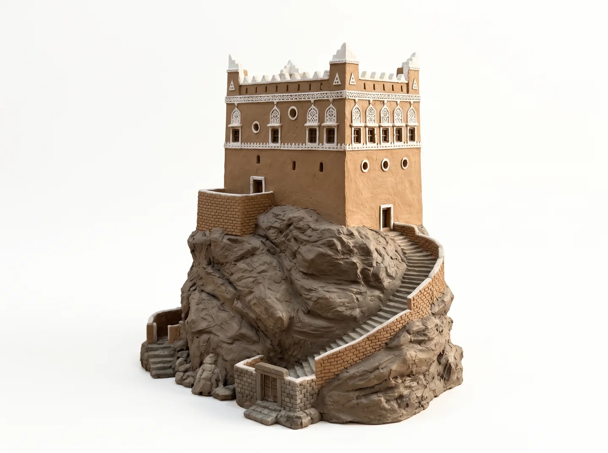
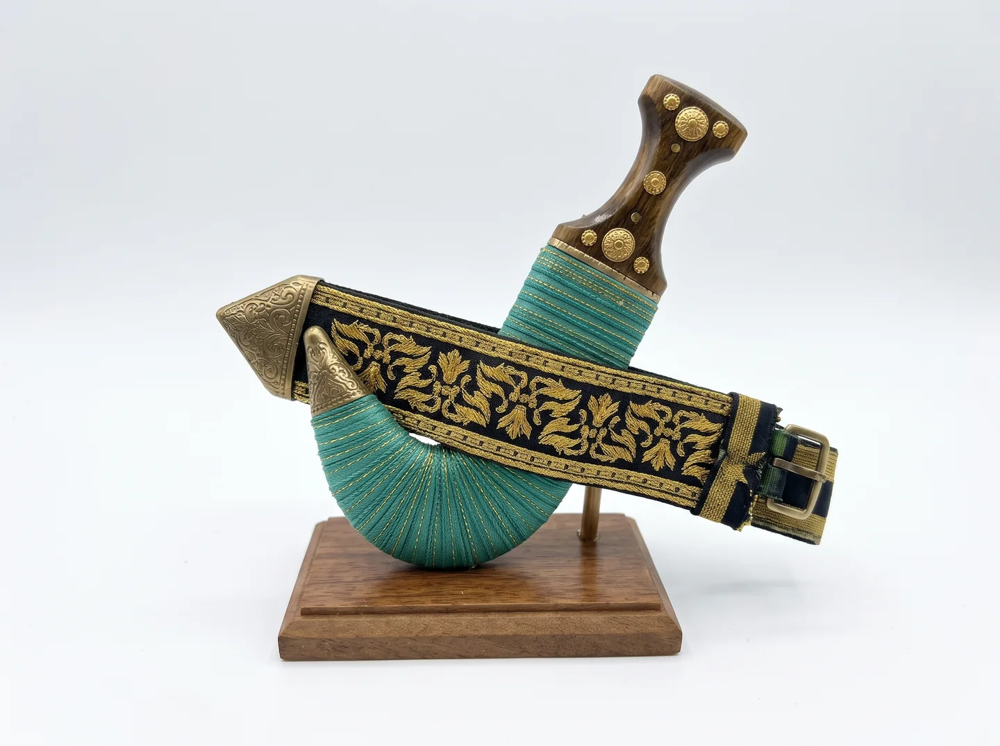

صنعاء القديمة، أمانة العاصمة
من أبواب صنعاء إلى قصور حضرموت، اكتشف مجسّمات وقطعًا تروي حكايات من التراث اليمني.
استعرض المجموعة
صنعاء القديمة، أمانة العاصمة

وادي ظهر، محافظة صنعاء

سيئون، محافظة حضرموت

المكلا، محافظة حضرموت

تريم، محافظة حضرموت

تراث يمني، ومن أشهر أسواقها صنعاء القديمة